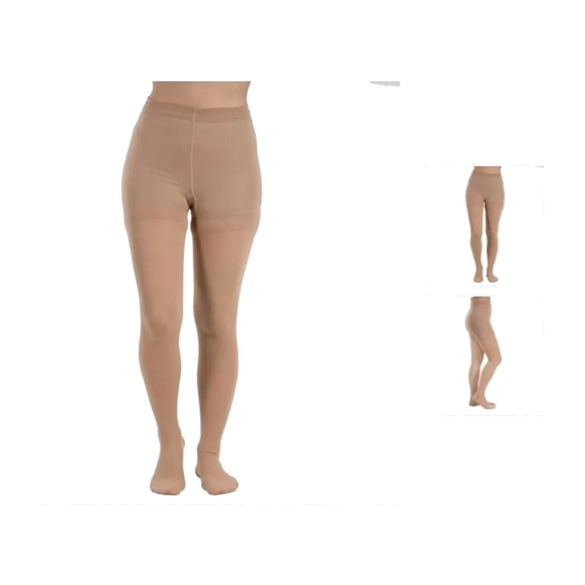
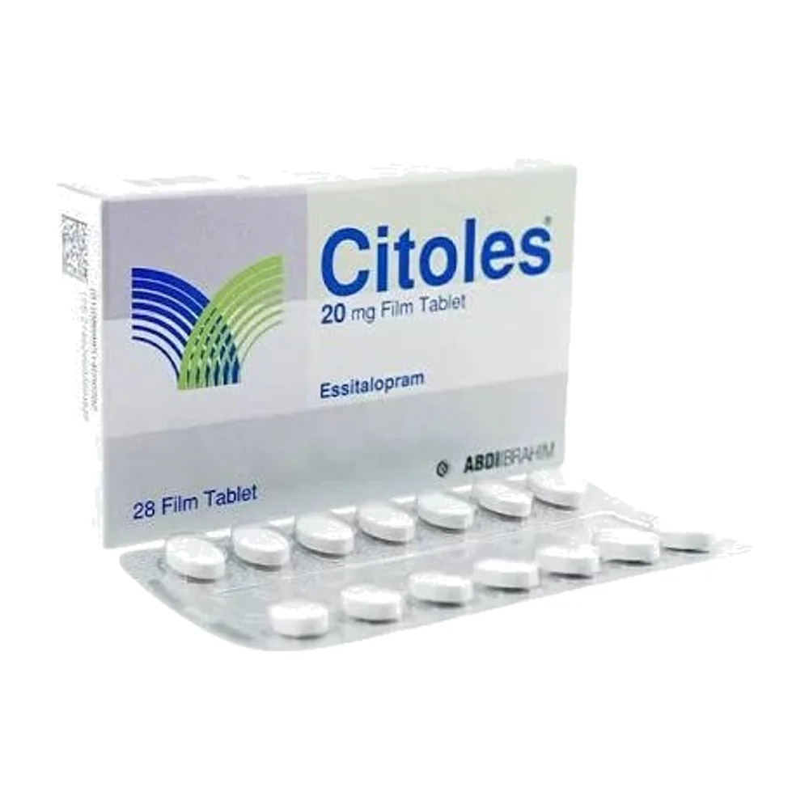
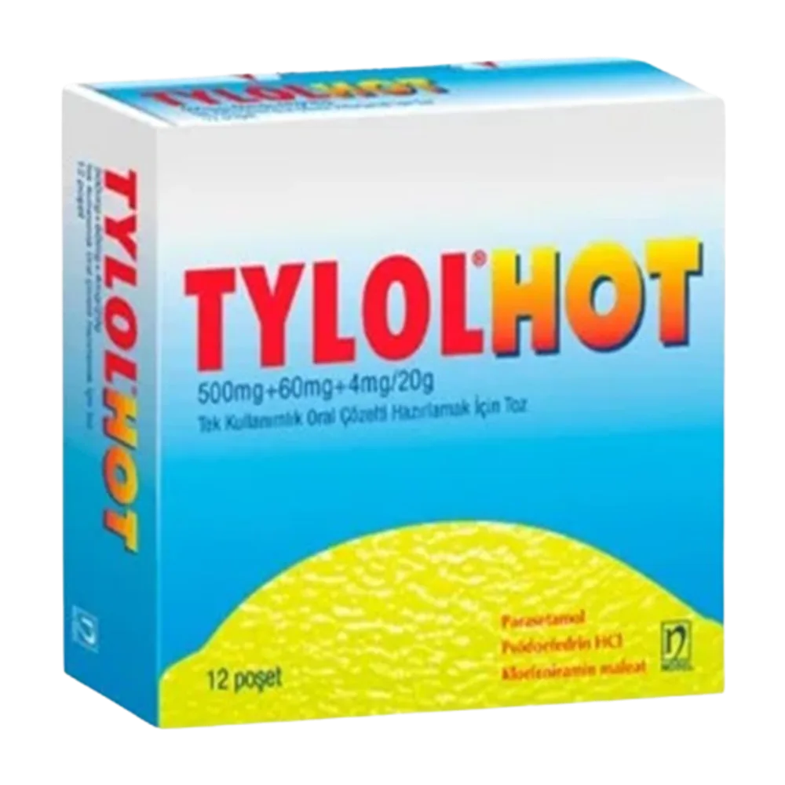

Cut-out review — tinted background, so any leftover white box shows
A backdrop still shows (0)
Kept their white background — cut-out rejected (2)

8508 · 13.3% ink
Hollaopke për vena të mbyllura (CCL2) ER

9889 · 5.8% ink
Citoles 20MG X 28 tab (9889)
First 120 of the rest

7618 · floodfill
Tylolhot 12 kesica (7618)